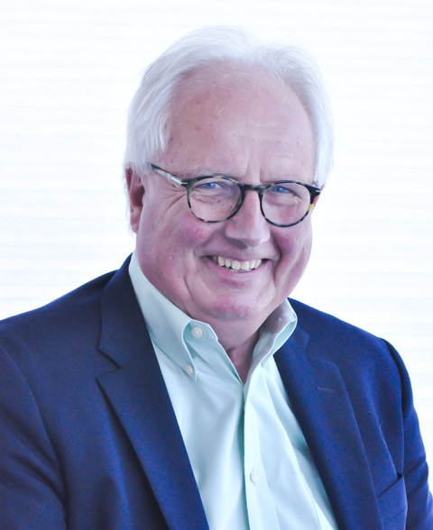

Thomas A. Kowalski, OTR/L
Occupational therapist and founder of the Golden Gate Center for Functional Capacity Evaluations in Sausalito. Tom began his career in 1973 and spent the 1980s at the forefront of microsurgical hand rehabilitation before focusing on functional capacity evaluation and ergonomics.
- OTR/L
- CEAS
- Hand Therapy Certification
- Physical Agent Modalities
- CA License #1324
Professional experience
-
2020 – PRESENTPrivate PracticeGolden Gate Center for Functional Capacity Evaluations · Sausalito, CA
-
2013 – 2017Occupational Therapist / ConsultantSutter VNA & Hospice · San Francisco, CA
-
2007 – 2020Private PracticeIPM Medical Group (formerly SFMMG) · San Francisco, CA
-
2000 – 2013Occupational Therapist / Consultant for Upper Extremity RehabilitationSutter VNA and Hospice · San Rafael, CA
-
1995 – 2000Occupational Therapist, Outpatient ServiceEaster Seal Society · Oakland, CA
-
1990 – 2007Senior Occupational TherapistCalifornia Pacific Medical Center, Department of Occupational Therapy · San Francisco, CA
-
1990 – 1994Occupational TherapistPrivate practice in association with Michael Norris, M.D., Board Certified Plastic, Hand and Microsurgeon · Burlingame, CA
-
1989 – 1990Coordinator, Hand Rehabilitation Service / Microsurgical Replantation ServiceUCLA Medical Center, Department of Occupational Therapy / Division of Plastic and Reconstructive Surgery · Los Angeles, CA
-
1989Acting Director, Occupational Therapy ServiceSt. Mary's Hospital & Medical Center, Department of Physical Medicine & Rehabilitation · San Francisco, CA
-
1981 – 1989Occupational TherapistPrivate practice in association with Elliott Rose, M.D. & Michael Norris, M.D., Board Certified Plastic, Hand & Microsurgeons · Burlingame, CA
-
1979 – 1988Director, Occupational TherapyPeninsula Hospital & Medical Center · Burlingame, CA
-
1976 – 1978Program Consultant / Assistant Director, Occupational Therapy ComponentBeverly Hospital · Sacramento, CA
-
1974 – 1976Assistant Director, Occupational Therapy ServiceBuffalo General Hospital (C.M.H.C.) · Buffalo, NY
-
1973 – 1974Director, Occupational TherapyVeterans Administration Hospital, Physical Medicine and Rehabilitation Service · Batavia, NY
Education & licensure
Education
Occupational Therapy
State University of New York, Buffalo, 1973
Licensure
California License #1324
NPI #1245562131
Certifications
- Hand Therapy (HTC)
- Physical Agent Modalities (PAM)
- Certified Ergonomics Assessment Specialist (CEAS)
Specialization
Functional Capacity Evaluations and Ergonomics
Organizational memberships
American Occupational Therapy Association
Congress of Physical Medicine & Rehabilitation
American Association for Hand Surgery
Bay Area Hand Special Interest Group
Academic & editorial
Samuel Merritt College · 1994 – 2001
Clinical Faculty Member (1995 – 2001) and Academic Search Review Board, Department of Occupational Therapy. Oakland, CA.
San Jose State University · 1985 – 1989
Adjunct Clinical Faculty Member, Department of Occupational Therapy, Division of Allied Health Services. San Jose, CA.
Guest Editor · 1984 – 1988
Archives of Physical Medicine and Rehabilitation, Hand and Upper Extremity.
Invited Reviewer
Journal of the American Congress of Rehabilitation Medicine.
Papers & publications
35 peer-reviewed papers, presentations and videos, referenced in more than 300 professional articles on nerve grafts, carpal tunnel syndrome and finger pad reconstruction.
Publications
- The Palmaris Brevis Turnover Flap as an Adjunct to Internal Neurolysis of the Chronically Scarred Median Nerve in Recurrent Carpal Tunnel
- The "CAP" Technique: Nonmicrosurgical Reattachment of Fingertip Amputations
- The Reversed Venous Arterialized Nerve Graft Across Scarred Beds
- Microsurgical Management of Complex Fingertip Injuries: Comparison to Conventional Skin Grafting
- Microsurgical Management of Complex Fingertip Injuries: Comparison to Conventional Skin Grafting
- Restoration of Sensibility to Anesthetic Scarred Digits with Free Vascularized Nerve Grafts from the Dorsum of the Foot
- Hand and Wrist Owner's Manual
Professional papers & presentations (25)
- Carpal Tunnel Syndrome: Old Disease / New Prevalence and Controversies
- Hand Rehabilitation: Post Resurfacing the Dorsum of the Hand with a Temporoparietal Fascial Flap
- The Palmaris Brevis Turnover Flap as an Adjunct to Internal Neurolysis of the Chronically Scarred Median Nerve in Recurrent Carpal Tunnel Syndrome
- The Reversed Neurovenous Arterial Nerve Graft for Digital Reconstruction Across Scarred Beds
- The Microsurgical Management of Complex Fingertip Injuries: Comparison to Conventional Skin Grafting
- The Palmaris Brevis Turnover Flap as an Adjunct to Internal Neurolysis of the Chronically Scarred Median Nerve of the Hand
- The Reversed Venous Arterial Nerve Graft in Digital Reconstruction Across Scarred Beds
- The Reversed Venous Arterialized Nerve Graft in Digital Nerve Reconstruction Across Scarred Beds
- Hand Rehabilitation Post Resurfacing the Dorsum of the Hand with a Temporoparietal Fascial Flap
- The Reversed Venous Arterialized Nerve Graft in Digital Reconstruction Across Scarred or Avascular Beds
- Microsurgical Management of Complex Fingertip Injuries: Comparison to Conventional Skin Grafting
- The Microsurgical Management of Fingertip Injuries
- Restoration of Sensibility to Anesthetic Scarred Digits via Free Vascularized Nerve Grafts from the Dorsum of the Foot and Sensory Re-Education
- Microsurgical and Rehabilitation Management of Fingertip Injuries
- Rehabilitation of Free Dynamic Gracilis Muscle Transfers to the Upper Extremity
- Restoration of Sensibility to Anesthetic Scarred Digits with Free Vascularized Nerve Grafts from the Dorsum of the Foot
- Free Vascularized Dynamic Muscle Transfers in Upper and Lower Extremity Reconstructions
- Restoration of Sensibility to Anesthetic Scarred Digits with Free Vascularized Nerve Grafts from the Dorsum of the Foot and Sensory Re-Education
- Treatment of Traumatic Finger Pad Avulsions with Primary Neurovascular Island Flaps & Sensory Re-Education
- Microsurgical Management of Fingertip Injuries
- Treatment of Traumatic Fingerpad Avulsions via Primary Neurovascular Island Flaps and Sensory Re-Education
- Restoration of Sensibility to Anesthetic Scarred Digits with Free Vascularized Nerve Grafts from the Dorsum of the Foot
- Free Vascularized Dynamic Muscle Transfer in Upper and Lower Extremity Reconstruction
- Microsurgical Reconstruction and Rehabilitation of the Upper Extremity
- Rehabilitation of Free Toe to Hand Transfers
Research, editorial acknowledgements, videos & posters
- Long Term Nerve Outcome Study
- Reconstruction of Central Metacarpal Ray Defects of the Hand with a Free Vascularized Double Metatarsal and Metatarsophalangeal Joint Transfer
- Local Arterialized Island Flap Coverage of Difficult Hand Defects Preserving Donor Digit Sensibility
- Our Story Is You — Charles Fox
- The Palmaris Brevis Turnover Flap as an Adjunct to Internal Neurolysis in Recurrent Carpal Tunnel
- Microsurgical Reimplantation, Reconstruction, and Rehabilitation: A Team Approach
Beyond the practice
Out of the office, Tom is on the water and in the Sausalito community: sailing, rowing the bay, and connecting Sausalito with its sister city of Cascais, Portugal.
- 2025Safety CommitteeMarin Rowing Association
- 2024MemberMarin Rowing Association
- 2023Sausalito CoordinatorJin Ishikawa / The Amana Expedition
- 2022Board MemberSausalito Sister Cities · Cascais, Portugal
- 2022Vice PresidentGGBC SF
- 2021Mud Hen AwardOWRC
- 2020Staff CommodoreSausalito Yacht Club
- Acknowledged in Coragemby Randi Lynn Beach, as Board Member of Sausalito Sister Cities and on the Cascais Operations Council
Contact
Cell
Fax
(415) 390-8017
Mailing address
P.O. Box 821, Sausalito, CA 94966